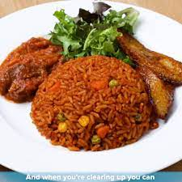

Jollof rice

The origin of thieboudienne is quite fascinating, albeit not as straightforward as one would like it to be as most of the history surrounding this delicacy was transmitted via oral tradition.
Ingredients
- A handful of parsley about a heaping cup
- 3 cloves of garlic
- 1 scotch bonnet/ habanero pepper
- 1 tsp shrimp bouillon
- 1 tsp black pepper
- 1 tsp salt
- 2.5 lbs blue snapper fish preferably cut into fish steaks or any white fish of your choice
Steps on how to make spaghetti
- In a mortar and with a pestle or in a food processor grind the scotch bonnet peppers and garlic into a rough paste)
- Saute the sliced onions in the oil over medium heat until translucent
- Add in the tomato paste, and stir fry for 5 minutes. The tomato paste may start to brown a little.
- Add in the ground garlic and scotch bonnet and stir fry for another 2 minutes
- Add in bullion, black pepper, and 8 cups of water. At this stage, taste the sauce for salt, and adjust to your preference.
- Add in the tough vegetable first in to the sauce and cook until tender. In this case, add in the sweet potatoes, cook until tender and remove, then the carrots, cook until tender and remove. Continue adding in the vegetables until all the vegetables are cooked.
- Set the cooked vegetables aside and then add in the fish and cook in the sauce for 2-5 minutes.
- Once the fish has simmered in the sauce for 2-5 minutes, gently remove it from the sauce.
- At this point, drain the rice that has been cooking and pour into the sauce. The sauce should just cover the rice. Adjust the amount of water at this stage if needed to make sure that the rice is just covered.
- Cover the pot and simmer on low-medium heat for 15-20 minutes. You may seal the cover of the pot with foil to prevent steam from escaping.
- At the 15 minute mark, check that the rice has absorbed the moisture and is soft. Cover and cook for another 5 minutes if it needs more time. If the water has dried up and the rice is still not soft, add in 4 tbsp of water, cover and allow to cook.
- Serve hot with the vegetables and fish, and lime wedges